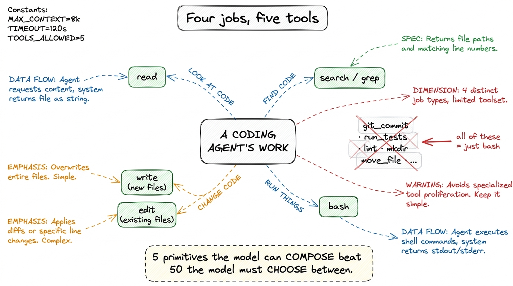
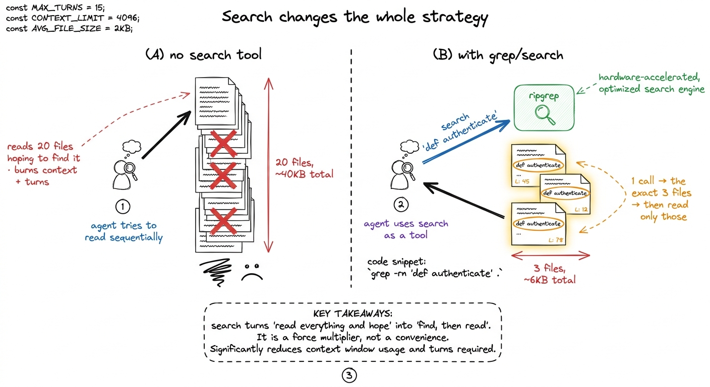
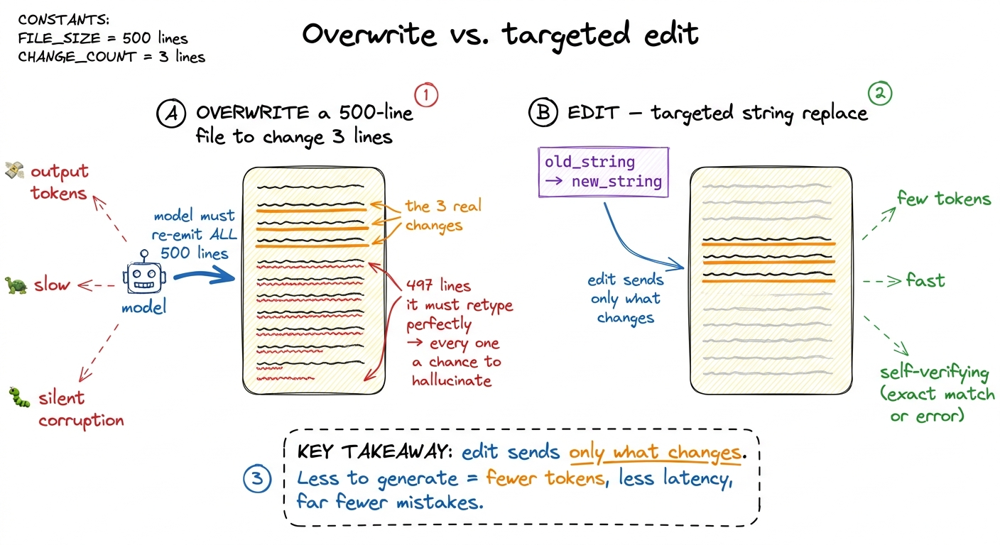
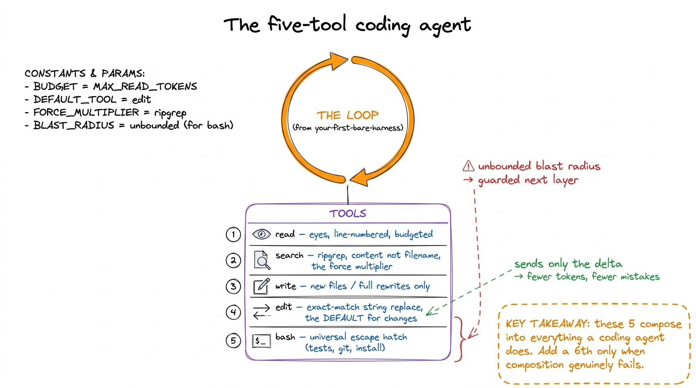

The core tools: read, write, edit, bash, search
When you first sit down to give an agent hands, the temptation is to give it everything — a tool for every filesystem operation, one per git subcommand, a wrapper around your linter, another for your test runner. Resist it. The striking thing about the harnesses that actually work — Claude Code, pi, Cursor's agent mode — is how few tools they hand the model. Almost the whole job of a coding agent is done by five primitives: read, write, edit, bash, and search. Everything else is a convenience that these five could have done anyway.
This chapter is about why those five, and only those five, and about the one design decision inside them that separates a pleasant agent from a maddening one — the choice of edit over overwrite. We built the naked versions of read_file and run_bash in your first bare harness; now we complete the set and explain the why behind each shape.
Why so few tools?
A tool is not free. Every tool you add spends three scarce things: context (its schema sits in the prompt every single turn, whether used or not), the model's attention (more choices means more chances to pick the wrong one), and your maintenance (each tool is a surface that can break or be abused). So the right question is never "what tool could help here?" but "what is the smallest set from which the model can compose everything else?"
Seen that way, the five fall out naturally. A coding agent does exactly four kinds of thing: it looks at code, it changes code, it finds code, and it runs things. read and search cover looking and finding. write and edit cover changing. bash covers running — and because bash is a universal escape hatch, it quietly covers a hundred operations you'd otherwise be tempted to give dedicated tools.

figure rendering · The four things a coding agent does map to five composable primitives.bash in a costume.There is a real tension hiding in that last point, and it is worth naming. bash alone is technically Turing-complete for the task — you could read files with cat, edit them with sed, search with grep, all through the one shell tool. Some minimal harnesses do exactly that. But it's a false economy: shell text-munging is fragile, its output is noisy, and — crucially — it gives the harness no structured hook to hang permissions, diffs, or undo on.1 This is the deeper reason dedicated file tools exist even though bash could do it all: a first-class edit tool is something the permission gate and the diff viewer can understand. A sed command buried in a shell string is opaque to both. Structure is what makes a tool governable. So the sweet spot is: dedicated, structured tools for the file operations you want to govern and display, and bash for the open-ended rest.
read: cheap eyes, with a budget
read is the simplest tool and the one you'll least think about, which is exactly why its design still matters. The naive version returns the whole file. That's fine for a 40-line config and a disaster for a 12,000-line generated file that blows your context window in a single call.
So the real read a harness ships takes optional bounds and returns the content annotated with line numbers — because the model's next move is almost always to edit, and edits need coordinates.
def read_file(path, offset=0, limit=2000):
lines = pathlib.Path(path).read_text().splitlines()
window = lines[offset : offset + limit]
# number every line so the model can refer to exact locations
numbered = [f"{offset+i+1:>6}\t{ln}" for i, ln in enumerate(window)]
return "\n".join(numbered)Two small decisions carry a lot of weight here. The line numbers turn a wall of text into an addressable coordinate system — when the model later wants to change something, it can reason about where. The default limit means a single reckless read can't detonate the context budget; the model sees a truncation marker and can page forward if it genuinely needs more. Claude Code reads exactly this way, capping large files and telling the model when it truncated.
search: the force multiplier
If read is the tool you'll underrate, search is the one whose value you'll consistently underestimate until you remove it. A coding agent without a good search tool is reduced to reading files hoping to stumble onto the right one, burning turns and tokens the whole way. Give it a real content search and its whole strategy changes: it locates the three relevant files in one call, then reads only those.

figure rendering · Without search, the agent reads blindly and drowns. With it, the agentread.The important design choice is what it searches. A filename search (find) is nearly useless to a coding agent — it rarely knows the filename. A content search — grep across the tree — is what it actually needs, because the agent thinks in terms of symbols and strings: "where is authenticate defined," "who imports this module," "find the string in the error message." Real harnesses lean hard on ripgrep (rg) for this, because it is fast, respects .gitignore by default, and skips binary files — all of which matter when you're spending the model's attention on the results.
def search(pattern, path=".", glob=None):
cmd = ["rg", "--line-number", "--no-heading", pattern, path]
if glob:
cmd += ["--glob", glob]
r = subprocess.run(cmd, capture_output=True, text=True)
return r.stdout[:8000] or "no matches"Notice this is technically just a bash call to rg — and yet it earns its place as a named tool. Why? Because naming it lets you shape the output (line numbers, no heading noise), cap it ([:8000]), and describe it precisely in the schema so the model reaches for it instead of improvising a fragile shell pipeline.2 This is the general rule for when to promote something out of bash into its own tool: do it when you want to control the output shape or attach a guardrail. Pure convenience is not enough of a reason — the schema cost is real, as we cover in tool schemas as contracts.
write vs. edit: the decision that defines the agent
Now the heart of the chapter. You need to let the agent change existing code. There are two ways to do it, and the choice between them is the difference between an agent you trust and one you babysit.
The obvious way is overwrite: the model produces the entire new contents of the file and the harness writes it wholesale. It works. It is also quietly terrible for anything but tiny files, and understanding why is worth more than any amount of tooling.
To overwrite a 500-line file to change three lines, the model must reproduce all 500 lines in its output. That is expensive in three compounding ways. It costs output tokens — you pay to regenerate hundreds of lines that didn't change. It is slow — generation is the latency bottleneck, and you're generating the whole file to touch 1% of it. And most damning: it is a fresh opportunity to hallucinate every single one of the 497 lines it was supposed to leave alone. A dropped import here, a subtly reformatted block there, a comment that quietly vanishes — every unchanged line the model has to retype is a line it can get wrong.
The edit tool sidesteps all of it. Instead of "here is the whole new file," the model says "find this exact string and replace it with that one." The harness does the mechanical find-and-replace; the model only ever emits the few lines that actually change.
def edit_file(path, old_string, new_string):
p = pathlib.Path(path)
text = p.read_text()
count = text.count(old_string)
if count == 0:
return "ERROR: old_string not found — read the file and copy it exactly."
if count > 1:
return f"ERROR: old_string matches {count} places — add surrounding lines to make it unique."
p.write_text(text.replace(old_string, new_string))
return "ok — 1 replacement"Look at what those two guard clauses buy you. Because old_string must match exactly once, the tool is self-verifying: if the model misremembered the code, the match fails and it gets a clear error telling it to read the file and copy the text verbatim — instead of silently corrupting the file. And because the model only emits the changed region plus a little surrounding context for uniqueness, the whole operation is a handful of tokens whether the file is 50 lines or 5,000.

figure rendering · Overwrite forces the model to regenerate every line it meant to leaveThis is precisely the design Claude Code landed on. Its primary editing tool is a string-replacement Edit — old text in, new text out, must be unique — and a separate Write reserved for creating new files or full rewrites, where overwrite is the honest operation. The division of labor is the whole point:
write— for a file that doesn't exist yet, or a rewrite so total that "the whole content" is the delta. No anchor to match; you're producing something new.edit— for every change to an existing file. The default. The model touches only what it means to touch, and the exact-match rule catches its mistakes before they hit disk.
If you internalize one thing from this chapter, make it this: the shape of your edit tool is the single biggest lever on how reliable your agent feels. An overwrite-only agent drifts, reformats, and drops code on long files. An edit-first agent stays surgical.3 There is one exception worth knowing: for a brand-new file or a genuinely wholesale rewrite, edit has nothing to anchor to, and forcing an empty-old_string edit is just write wearing a disguise. That's exactly why the two tools coexist rather than collapsing into one — each is honest about a different situation.
bash: the universal escape hatch
The last primitive is the one that makes the other four sufficient rather than merely nice. bash runs an arbitrary shell command and returns its output, and it is how the agent does everything the file tools don't: run the tests, invoke git, install a package, start a dev server, mkdir a directory, check python --version.
This is why you don't need dedicated run_tests or git_commit tools — they'd just be bash with a fixed prefix, and the model already knows how to type pytest or git commit. One general tool the model can compose beats twenty specific tools it has to choose among.
def run_bash(cmd, timeout=120):
r = subprocess.run(cmd, shell=True, capture_output=True,
text=True, timeout=timeout)
return (r.stdout + r.stderr)[:8000] or "(no output)"But bash is also the tool that should keep you up at night, because it is the one with unbounded blast radius. A misjudged read wastes some tokens. A misjudged bash can be rm -rf, curl | sh, or a git push --force. Which is exactly why, in the naked harness, we ran it with no protection on purpose — so you'd feel the danger — and why the very next layer wraps it in a permission gate and a sandbox. The power of bash and the necessity of guarding it are the same fact seen from two sides.
The whole toolbox, and what it earns you
Five tools. read gives the agent cheap, budgeted eyes. search turns "read everything and hope" into "find, then read." write creates. edit changes existing code surgically, sending only the delta and catching its own mistakes. bash does everything else and, in doing so, keeps the set small. That is the toolbox inside Claude Code and pi, give or take a browser tool — and it is enough to build, debug, and ship real software.

figure rendering · The complete core toolset wired into the loop: read, search, write, edbash) guarded in the very next layer.What it doesn't yet have is any governance. Right now edit will happily rewrite a file the user didn't want touched, and bash will run whatever the model dreamed up. We built the hands; next we build the part that decides which of their movements are allowed. But before we can gate a tool cleanly, the model has to understand each tool precisely — and that understanding lives entirely in the schema. So the next chapter is about the contract itself: tool schemas as contracts.